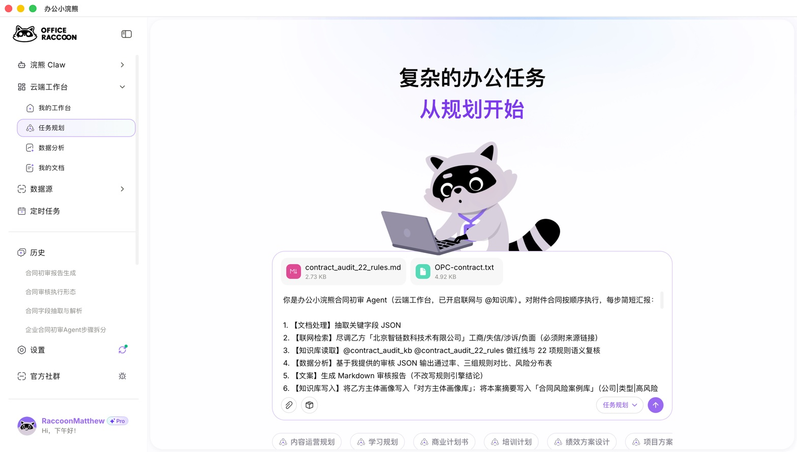
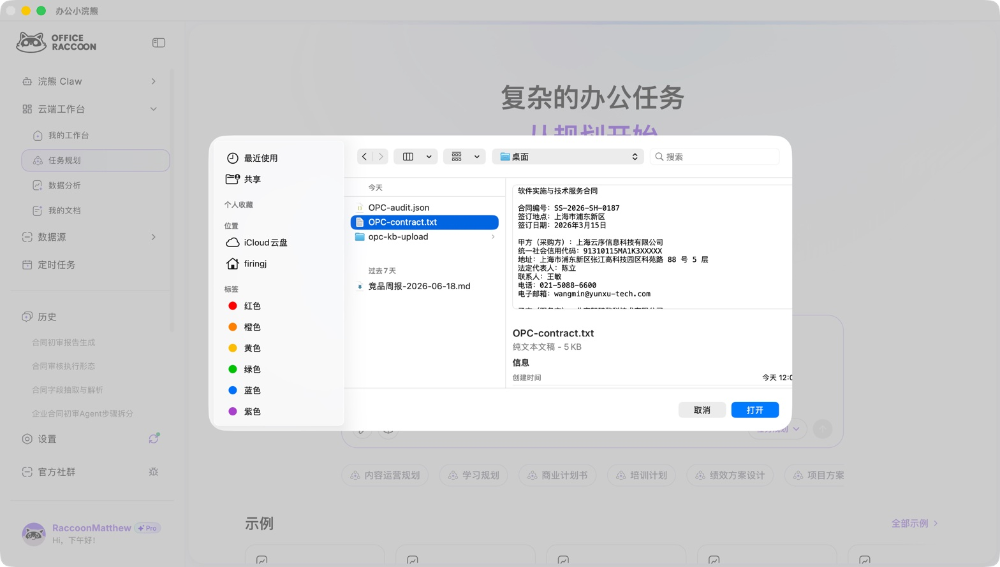
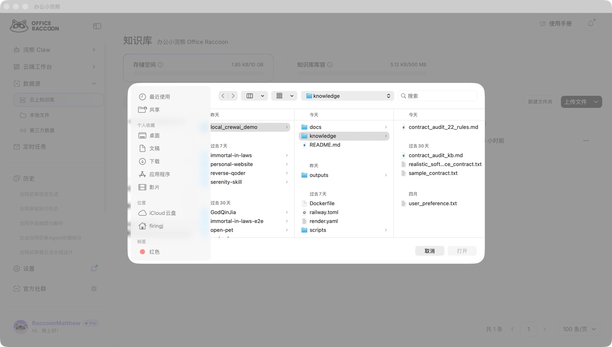
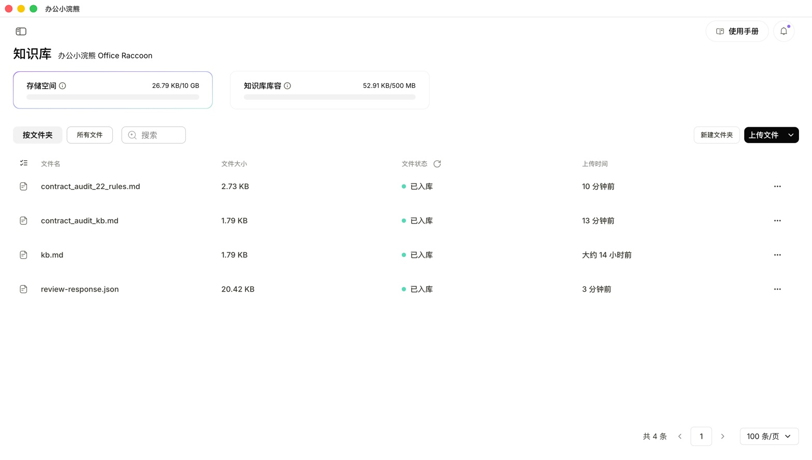
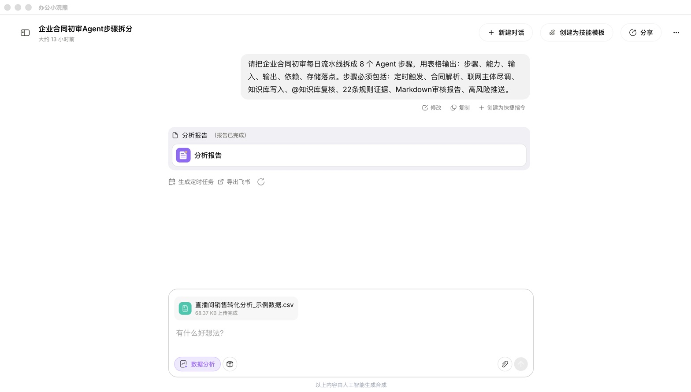
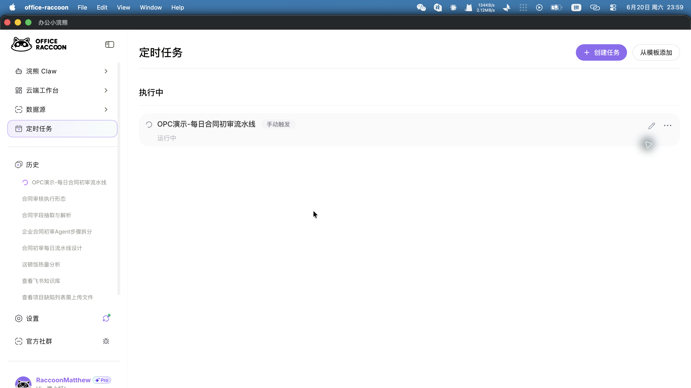
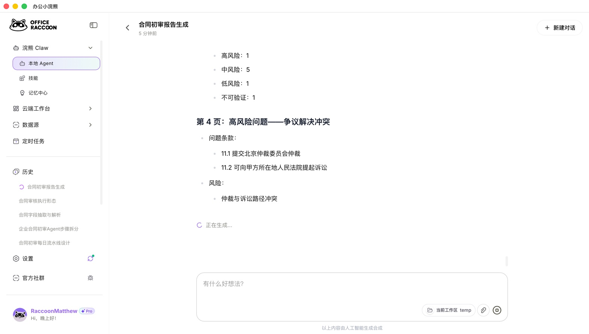
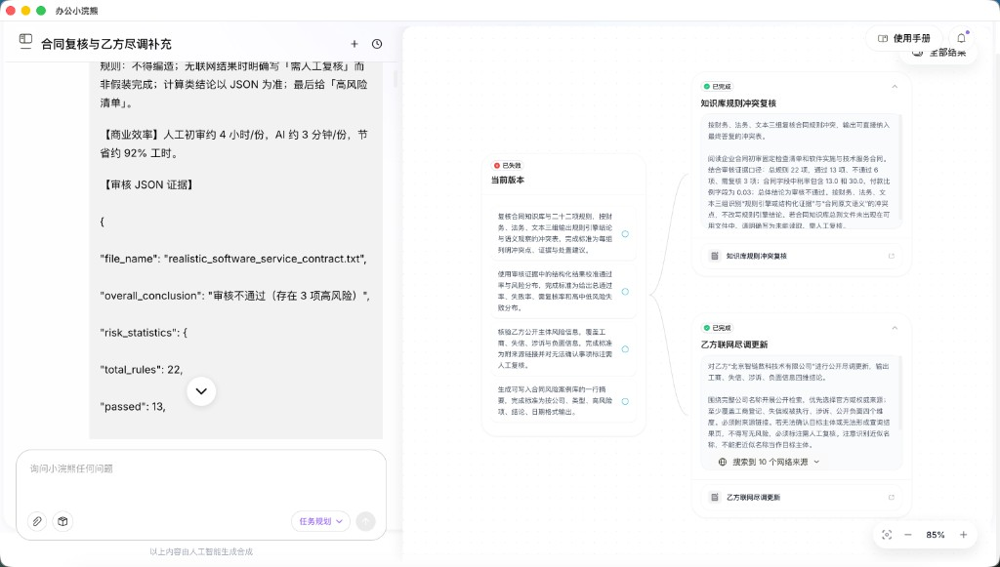
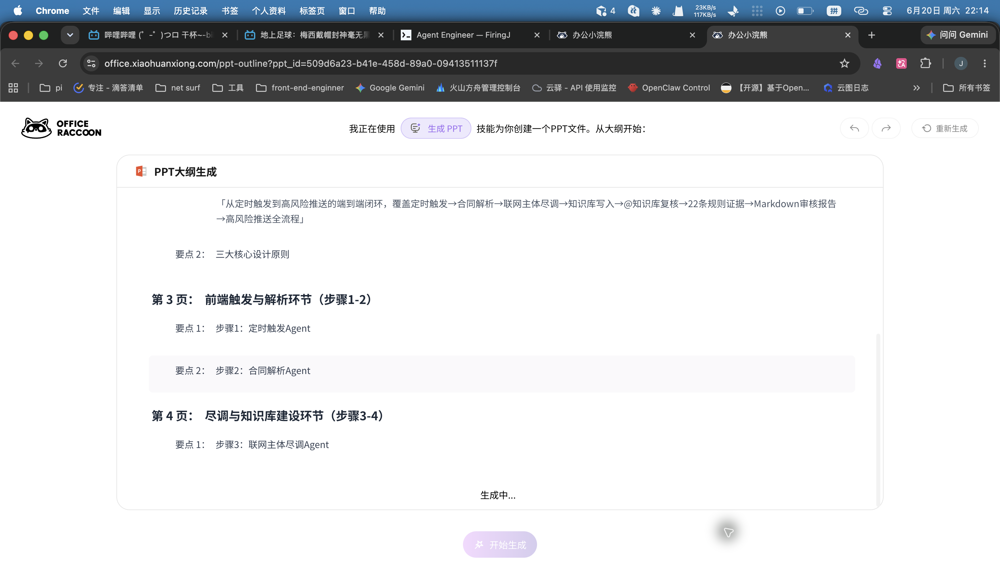

针对的是企业合同审查里那些天天重复、又容易出错的环节——一份合同，法务财务业务各看一遍，单份常常 4 小时。
采购、技术服务、外包等合同从邮件、审批系统、共享盘进待审队列。
法务看条款，财务核金额和税率，业务盯付款节点。单份常常要 4 小时。
30% 税率、0.03% 付款比例、缺标的，签完才发现就晚了。
规则、案例、主体画像无法持续沉淀；换个同事又从零审一遍。
痛点不是「能不能审」，而是每天重复审、多人接力审、细则容易漏、审完还沉淀不下来。
单次问答、手工表格和纯脚本，都解决不了「每天都要跑、每次都要一致、每项都要留痕、还要接进企业工具」。
单份约 4 小时，多角色各看一遍；漏项难追溯，周五汇总靠手工统计。
无定时任务、无知识库沉淀、无多轮调优记录；每次从零解释规则，全量 token 喂给模型。
数值类准确但语义类误报多；不接飞书、不出可读报告、不生成周报和主体画像。
三层 skill（PDF结构化·规则引擎·LLM复核）+ 飞书知识库闭环 + 七步 Agent；定时拉取 → 规则作证据 → 报告写回飞书 → 多维表格沉淀；人只复核异常。
以下为核心摘录；完整 Prompt 见随附文档。规则引擎输出作必查维度，逐维输出 engine_signal vs 最终结论。
你是办公小浣熊合同审查 Agent（云端工作台，已开启联网与 @知识库）。对附件合同按顺序执行，每步简短汇报： 1. 【文档处理】抽取关键字段 JSON 2. 【联网检索】尽调乙方工商/失信/涉诉/负面（必须附来源链接） 3. 【知识库 + 规则参考】@contract_audit_kb @contract_audit_rules：红线复核；将规则引擎 dimensions 作必查维度，逐维输出 engine_signal vs 最终结论 4. 【数据分析】基于终局结论输出通过率与风险分布 5. 【文案】Markdown 审核报告（含维度对照表） 6. 【知识库写入】主体画像 + 案例摘要 7. 【汇报】6 页 PPT 大纲 规则：不得编造；数值类优先采信规则引擎；语义类以模型解读为准。

不是单点功能堆砌：定时任务触发 → Agent 编排七步 → 各模块接力产出证据与交付物，结果沉淀回飞书。
协作顺序：09:00 定时任务经 Skill 触发本地闭环 → 报告/记录/画像写回飞书 → 小浣熊对待尽调主体原生联网检索 → 尽调结论回填主体画像 → 周五 PPT 模块输出本周汇总。各用所长，全流程无降级。
一条 MCP 双向流水线：小浣熊定时触发本地审核并拿回待尽调清单，联网尽调后把结论写回主体画像——各用所长，全流程无降级。
实测 2026-07-03：2 份主体画像已写回飞书 wiki（审核历史 + 尽调结论）· MCP server 同步备好，待桌面端开放入口
把合同审查拆成三层可复用 skill——结构化与数值计算零 token，LLM 只在语义判断与报告生成时消耗，混合架构相对纯 LLM 节省 17.6%。
三层 skill 可跨合同复用 · 每条风险都能回到合同原文与规则编号 · AUDIT TRAIL
合同写进飞书知识库 → 脚本轮询检测 → 三层 skill 审核 → 报告写回知识库 + 结构化记录入多维表格，每条结果都可追溯。
脱敏软件服务合同
税率·付款·争议解决
报告写回飞书 wiki
多维表格已入库
实测 2026-07-03：NO.001 rules_only（128万·3高风险）+ NO.002 rules_agent（200万·LLM复核）+ 2 份主体画像写回
从样本合同、Prompt 措辞到红线入库，再到多轮调优与定时任务跑通——以下均为办公小浣熊真实界面。





注：部分截图为早期 22 项规则映射；当前引擎已扩展至 26 项并对接上位法。
单份跑完出 Markdown 报告并写回飞书知识库；周五定时任务把本周数据汇总成演示文稿大纲。



风险命中与 Token 节省来自 128 万元样本实测；单份 4h→3min 为人工初审 vs 流水线耗时估算。
26 项常规核对机器跑；法务复核高风险和需人工项。
飞书知识库写入即审；周五自动出本周汇总 PPT。
报告、审核记录、主体画像写回飞书 wiki + 多维表格，形成组织记忆。
实测（128万·NO.001）：通过 17/26 · 不通过 6 · 需复核 3 · 通过率 65.4% · 3 高风险 · 混合架构 14931 token、节省 17.6% · TIME 92% 为估算非计时实测
以下材料单独上传为附件，便于对照本稿中的流程与截图；飞书闭环可现场打开链接演示。
约 2 分钟 · 知识库 → 定时任务 → 手动运行 → 云端 Agent 闭环
七步 Agent · 定时/周五汇总 Prompt · 红线 · 26 项规则 · 脱敏合同样本
知识库「合同审查闭环demo」+ 多维表格「合同审查记录」· 可现场打开
skills/contract-review-loop · 定时任务经 Skill 触发本地闭环（MCP server 备用）
桌面端定时任务 6 张 · 云端工作台 8 张（均为办公小浣熊真实界面）